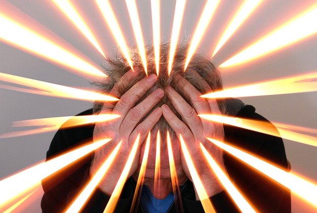
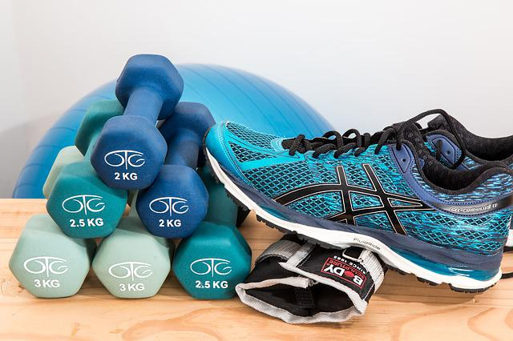

Esgotamento mental e burnout
O esgotamento mental é definido como o aparecimento de esgotamento emocional e físico ligado ao trabalho [...]
Ler mais
Fatores de combate ao esgotamento mental e burnout
Combater esta doença é de extrema importância, devem ser empregadas estratégias [...]
Ler maisMeditação e mindfulness
No dia-a-dia os indivíduos tendem a ser colocados em diversas situações de tomadas de decisão, responsabilidades e obrigações, formando um ciclo de acúmulo [...]
Ler mais

Exercícios físicos e alimentação
A rotina agitada faz com que muitas vezes os estudantes universitários não deem a devida atenção e dediquem tempo a [...]
Ler maisDescanso
A rotina agitada faz com que muitas vezes os estudantes universitários não deem a devida atenção e dediquem tempo a [...]
Ler mais